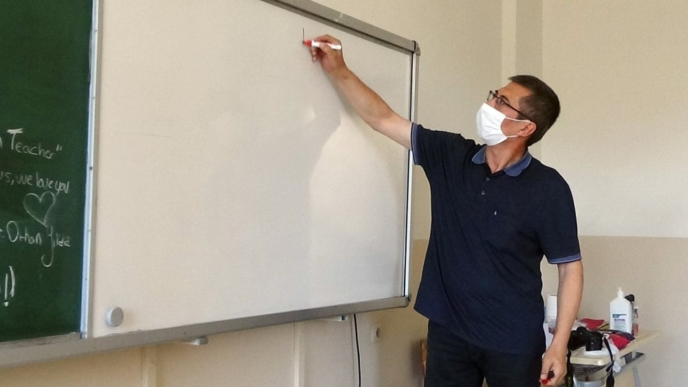

22 Kasım 2017 - Milliyet
Yüksekova ilçesinde görev yapan İngilizce Öğretmeni Orhan Yıldız, ilçede 22 yıldır eğitim hizmeti sunmanın mutluluğunu yaşıyor
HAKKARİ (AA) - Hakkari'nin Yüksekova ilçesinde 22 yıldır görev yapan İngilizce Öğretmeni Orhan Yıldız, öğrenciler için gösterdiği çaba ve fedakarlığı ile takdir topluyor.
Aksaraylı öğretmen Yıldız, gönüllü atandığı ilçede eğitim verdiği sürede yaklaşık 250 lise öğrencisinin üniversite sınavını kazanmasına yardımcı oldu.
İsmet Alkan Anadolu Lisesinde görevli Yıldız'ın geçen sene hafta sonları ders verdiği sınıfındaki 13 öğrenci de İstanbul, İzmir, Mersin gibi büyük şehirlerdeki üniversitelere yerleşti.
Yıldız, AA muhabirine yaptığı açıklamada, ilçede huzurlu ve rahat çalıştığını söyledi.
Eğitimcilik süresince güzel başarılar yakaladığını aktaran Yıldız, "İnsanların yakınlığından, desteğinden memnunuz. Yüksekova'da eğitime büyük önem veriliyor. Eğitime olan ilgi git gide artıyor. Her yıl daha fazla sayıda öğrenciyi üniversiteye yolluyoruz. Devletimizin de eğitime olan desteği, katkısı gözle görülür şekilde fazladır." dedi.
Öğrencilerinin ülkenin farklı yerlerinde üniversiteye gittiklerini anlatan Yıldız, şöyle konuştu:
"İzmir, Antalya, Mersin, Adana, İstanbul ve Van'dan hemen hemen her yere öğrenci yolluyoruz. Vaktiyle eğitim, öğretim sürecini paylaştığımız, aynı sınıfta öğrenci, öğretmen rollerini oynadığımız arkadaşlarımızla bugün aynı okulda görev yapabiliyoruz. Bu bizim için iftihar meselesidir. Bu çok güzel bir his. Bunu ancak yaşayan bilir diye düşünüyorum."
Yüksekova'daki ailelerin, eğitim ve öğretimin ortaya koyduğu dönüşümü, farklılaşmayı, aydınlanmayı ve bilinçlenmeyi gördüğünü kaydeden Yıldız, bu nedenle herkesin gün geçtikçe eğitime daha çok sarıldığını ve daha çok önem verdiğini aktardı.
Artık herkesin kendini eğitimle ifade etmeye çalıştığına vurgu yapan Yıldız, şunları kaydetti:
"Beni Yüksekova'ya bağlayan temel sebep, devletime, milletime ve insanıma olan vefa borcumdur. İçimde öteki, başkası, diğeri, yabancı diye bir his yoktu. Kuzeyden güneye, doğudan batıya memleket ve insanlar benimdir. Buradan olmaktan mutluyum. İnsanımla iç içeyim. Vatanımın bir parçasında görev yapıyorum. Hiçbir sıkıntı, stres başkalık, öteki hissi, ayrı, gayrı yok. Bu his inşallah, 80 milyonun hepsine hakim olacak, birlikte daha güçlü olacağız."
Öğretmenliğin uzun soluklu bir meslek olduğunun altını çizen Yıldız, genç meslektaşlarına insanları sevgi ile yetiştirme gayreti içerisinde olmalarını tavsiye etti.
Yıldız, "İnsanları sevelim, onlara umut verelim, kendilerine güvenmelerini sağlayalım. Geleceğimiz eğitimle olacaktır." dedi.
12. sınıf öğrencisi Burhan Doğan da öğretmenlerini çok sevdiklerini dile getirerek, "Orhan hoca dersi, öğrencilerin sevdiği ve anlayabileceği şekilde anlatıyor. 22 yıldır ders verdiği öğrencilerinin büyük bölümünü üniversitelere yerleştirdi." dedi.
Kaynak: Milliyet